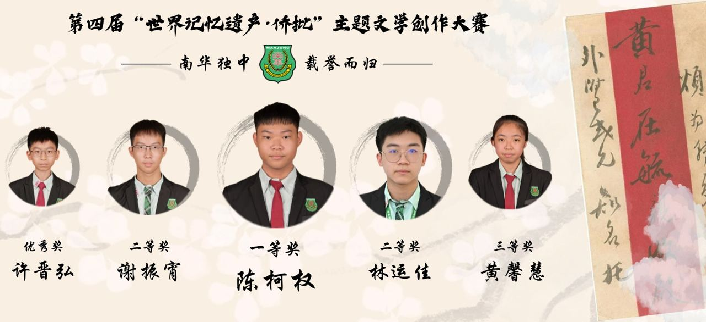
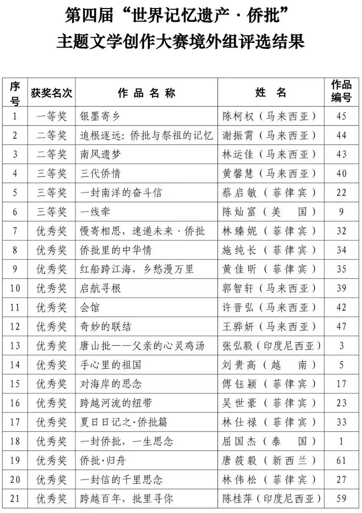
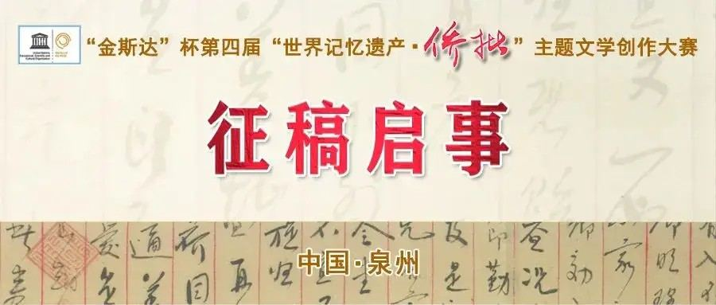

南华独中五学子荣获
南华独中五学子荣获
“世界记忆遗产·侨批”文学大奖
彰显中华文化素养与书写力
第四届“#世界记忆遗产· #侨批”主题文学创作大赛于近日揭晓成绩，“境外组”中曼绒南华独中五位学生脱颖而出，载誉而归，囊括一等奖、二等奖、三等奖与优秀奖，为校争光，也为马来西亚华文教育树立佳绩。
本届赛事由 中国福建省档案局 指导，泉州市多单位主办，主题为“彰显侨批价值 凝聚侨心侨力”，面向全球华侨华人征稿，共收到来自菲律宾、马来西亚、美国、新西兰等地的746件原创作品。最终，经过严格评审，共有63件作品获奖，其中境外组仅设一等奖1名、二等奖2名、三等奖3名、优秀奖15名，竞争激烈，意义非凡。
在这份光荣榜上，南华独中五位学生荣登其列：
一等奖：陈柯权《银墨寄乡》
二等奖：谢振宵《追根逐远：侨批与祭祖的记忆》
二等奖：林运佳《南风遗梦》
三等奖：黄馨慧《三代侨情》
优秀奖：许晋弘《会馆》
文学是文化的根，侨批是情感的桥
对于学生们的优异表现，南华独中校长陈丽冰博士表示由衷赞赏。陈校长强调：“南华独中的办学愿景是培养‘引领’21世纪中华文化素养领袖人才”。这次的获奖，不仅展现了学生在文学素养、写作训练、文化意识等方面的卓越成果，更体现了本校‘学会读书·学会做人’的教育理念——懂得饮水思源与心怀感恩。”
陈校长进一步表示，“侨批”是19世纪至20世纪中叶间，华侨寄往家乡的信件与汇款票据，浓缩了离散亲情与家国情怀，已被联合国教科文组织列入“世界记忆遗产”。侨批文化是一段跨越大洋的家国情深，也是连接华侨与故乡血脉的纽带。学生通过书写侨批，得以深入思索中华文化的情感根脉，体会祖辈艰辛，也铭记血浓于水的文化传承。
“文化底蕴是学生成长的养分，故乡是莘莘学子永痕的根茎。我们期望学生能借由文学创作，发扬中华文化的优良美德。”
陈校长特别感谢负责指导的林子策老师，此次比赛的优异成绩，标志着南华独中在跨文化写作教育与中华文化传承上的双向努力已见成效。在校内语文与人文学科教师团队长期推动下，学生不仅掌握写作技巧，更能以文字连接记忆、情感与价值观，走出教室，走入世界。
据悉，这些得奖作品将由泉州市档案馆永久保存，并择优刊登于中国知名文学刊物《泉州文学》《海丝侨声》，让更多人读见海外华人青少年的深情与思考。


